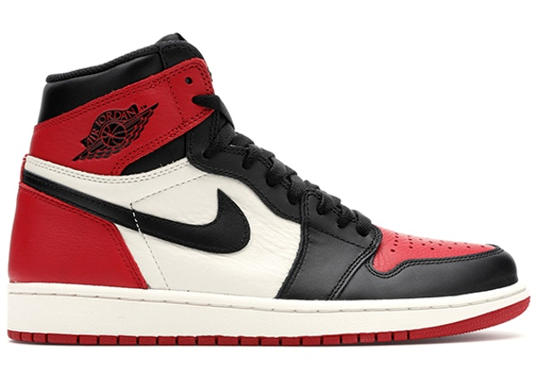
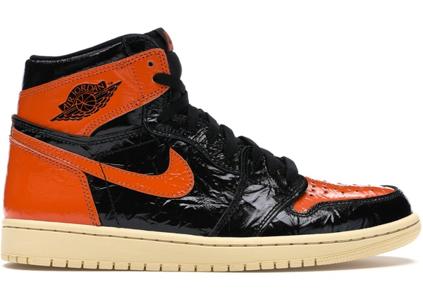
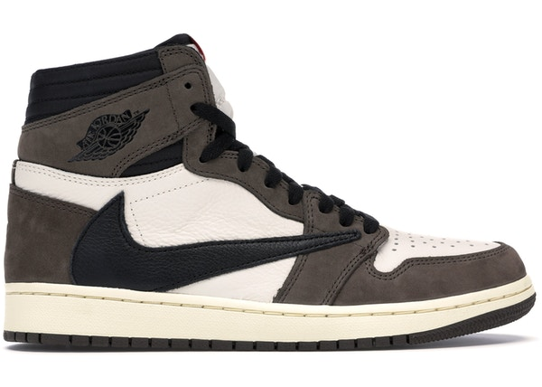

Adidas Yeezy Boost 350 v2
480€
Farba: White/Core Black/Red
Dátum vydania: 25/02/2017
Počet kusov: 142 ks
Dostupnosť: Skladom
Vyberte si veľkosť
- 38 - Dostupné

- 39 - Dostupné
- 40 - Dostupné
- 41 - Dostupné
- 42 - Dostupné
- 43 - Dostupné
- 44 - Dostupné
Popis produktu
Druhá edícia legendárnych tenisiek adidas Yeezy Boost 350 s prezývkou Zebra.
Na bielom podklade sú vyobrazené čierne pásy a červené písmo, čo z neho robí jedno
z najuznávanejších a okamžite rozpoznateľných adidas Yeezy tenisiek všetkých čias.
Zebry boli v jednom čase jedným z najvyhľadávanejších tenisiek na planéte.
V novembri 2019 značka adidas znovu uvolnila legendárnu Zebru v limitovanom počte.